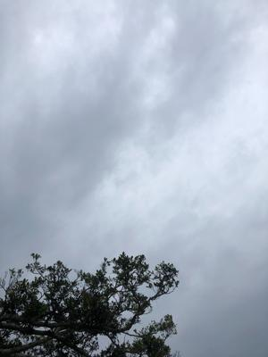
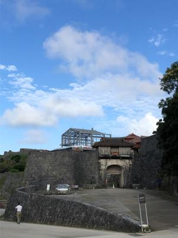
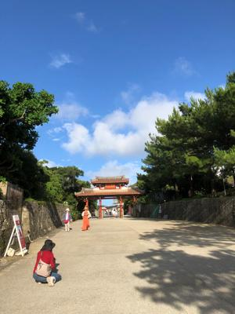
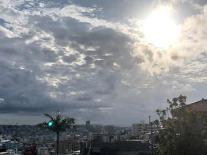

うるがいの話 ある日
最新: 具体と抽象【うるがいの話 ある日】とは 一日だけのプログです
『うるがいの話』の最新一日だけのプログで、通信料が少なく経済的だ。カニの画像をクリックすると全ての日付が載る『うるがいの話』サイトを表示します
|
|
【うるがいの話】 うるがい(ｳﾙｶﾞｲ urugai)とは、『もずくがに』の名前でとても大きくなります。 |
|---|---|
|
|
【カミマヤーの話】 猫のことを方言でマヤーといいます。カミマヤー（kamimayaa）とは、神の猫のことです。 |
|
【たながぁの音楽】 たながぁ（ﾀﾅｶﾞｰ tanagaa）とは手長えびのことで、何種類かあり大きいのは車 エビぐらいになります。 |

|
【ぶながぁの話】 ぶながぁ(ﾌﾞﾅｶﾞｰ bunagaa)とは、赤い髪の毛、赤い身体、そして身長は１ｍ２０ｃｍ ぐらい、川の蟹を食べているの目撃された。場所は沖縄県国頭郡大宜味村のと ある村僕の隣近所に住んでいる爺さんから、聞いた話です。 |
|
|
【ギーマの話】 ギーマ(giima)とは、山原の里山に咲くスズランに似た、 花を付けます。実は食べられます、 気が付くと口の周りが紫になっています。 |
2022年05月24日 (火）具体と抽象
16:32
   
会社の名刺の裏に「わたしたちの行動指針」が印刷されたいた。あるときの飲
み屋でこの方針は今一！と、他の部署のクさんが言った。ん、どこがと思った。
『具体と抽象. 世界が変わって見える知性のしくみ.』細谷 功著より引用
大きな方向性や将来のビジョンを決定する上でも、必要なのは「抽象化能力」
です。「要するに自分たちはどうしたいのか？」を考えることが、大きな方向
性を決定するには不可欠だからです。
個別の行動の判断に困ったときの拠り所となるのも、「最終的に何を実現した
いか？」という長期的な上位目的です。「枝葉を切り捨てて幹を見る」という
、抽象化の考え方がここで生きてきます。
この文を見てふむふむ、クさんは抽象化の表現に、納得いかなかったのだと気
付く。この本、借りる時に既に次の予約があった、こんなハウツー本をよくも
読むもんだと。雨が降っている、外へはでられないか・・・・・・
１６時２７分 ビットコインの総資産 ￥１０、８４４↓